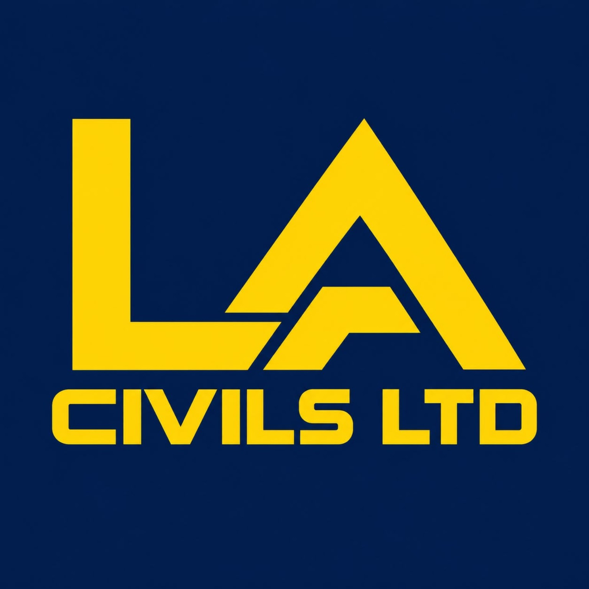

Civil works
The groundwork behind connected infrastructure, creating routes and access for new cable installations.
- Trenching and excavation
- Duct and chamber installation
- Underground cable routes
- Reinstatement works

Civils, utilities and cabling, brought together. From underground routes and PIA works to structured cabling and landscaping, LA Civils Ltd helps deliver your project.
Explore our services ↗Practical delivery across civils, utilities, flex cabling, PIA, structured cabling and landscaping. Bring us a defined package or discuss the wider scope.
The groundwork behind connected infrastructure, creating routes and access for new cable installations.
External cabling works linking infrastructure, premises and networks across underground and overhead routes.
Organised internal cabling for commercial spaces, connecting work areas, equipment and communications rooms.
Civil works supporting utility infrastructure, with the scope planned around site access, existing services and programme.
Physical Infrastructure Access works for fibre delivery using existing underground and overhead infrastructure.
External works and landscaping to finish outdoor spaces and bring disturbed areas back into use.
Start with the drawings, site requirements and intended outcome. Identify access, interfaces and constraints early.
Agree the scope, sequence and programme around the site and the people working on it.
Keep communication clear through installation and agree the completion records required for your project.
Planning civils, utilities, cabling or landscaping works? Call us on 07908 585393. Build a short brief with the key details ready for your enquiry.
This brief builder saves a text file to your device. It does not send an enquiry.